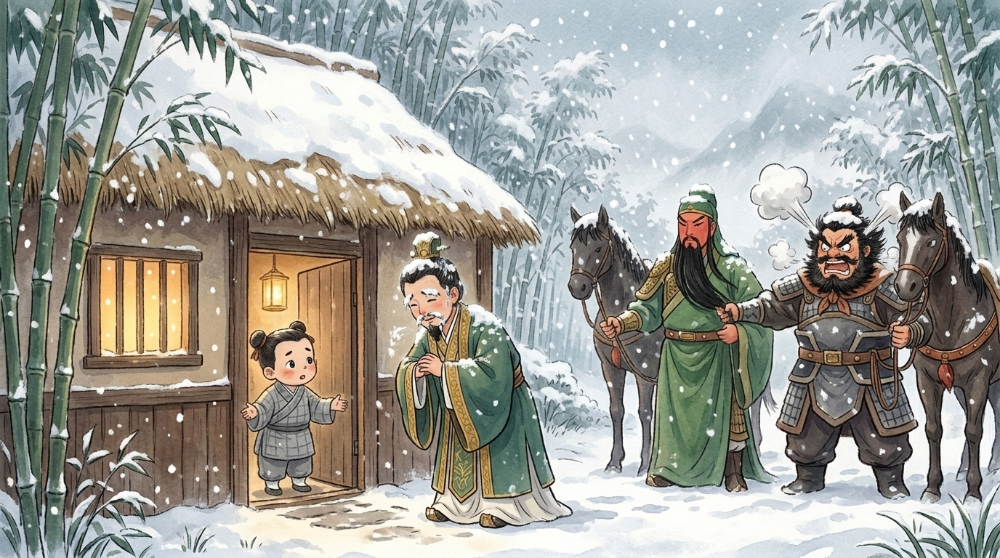
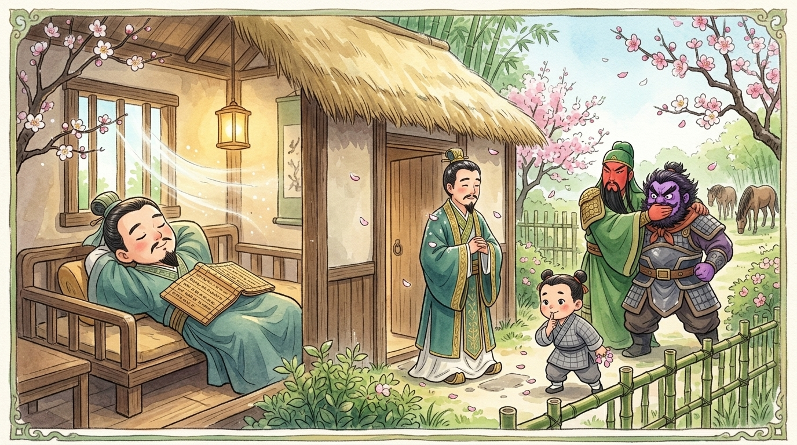
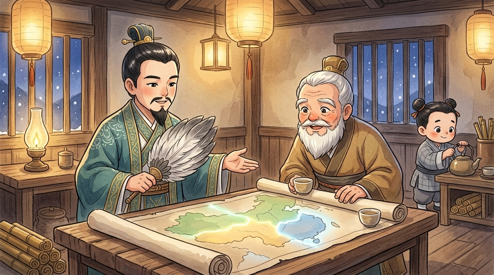

People always ask my master how the greatest partnership in China began. Nobody ever asks ME — and I'm the one who opened the door! I was the book boy (書僮) at the little thatched cottage in Longzhong (隆中), where my master Zhuge Liang (諸葛亮) farmed, read, and napped better than any man alive. That winter, the same visitor knocked three times. By the third knock, the history of China creaked open with my door. Here is exactly how it happened — from the doorstep.1
🚪 The first knock
It was a cold bright morning when three riders came up our valley. The leader had kind eyes and travel-worn robes — Liu Bei (劉備), a famous lord, though you'd never guess it from his luggage. Behind him: a tall red-faced warrior with a beard like a waterfall, Guan Yu (關羽), and a bristling black-bearded giant, Zhang Fei (張飛), who looked at our vegetable patch like it had insulted him.
Liu Bei dismounted, straightened his robes, and knocked — politely, like a student visiting a teacher, not a lord visiting a farm. "Is Master Sleeping Dragon at home?"2 he asked. And I gave the answer I gave everyone: "My master went wandering this morning. Where? He never says. When will he return? The mountains decide." Liu Bei's shoulders dropped — but he bowed to me, a doorboy!, left his respectful greetings, and rode away. Zhang Fei's voice boomed down the valley: "We rode ALL DAY for an empty house?!"
I told my master that evening. He smiled at his book and said nothing. My master, you should know, missed nothing that happened in that valley. Remember that.
🚪 The second knock — in a snowstorm
Weeks later, in the worst snow (大雪) of that whole winter, the knock came again. I could hardly believe my frozen ears. There stood Liu Bei, eyebrows white with frost, bowing through the doorway: "Is the master home?" And oh, my heart hurt to say it: "Gone again — visiting a friend, somewhere beyond the hills." Behind Liu Bei, Zhang Fei made a sound like a kettle reaching full boil. "A NOBODY! A FARMER! Brother, let a couple of soldiers drag him to us and be DONE!" Liu Bei turned on him, sharp as I ever heard that gentle man speak: "You do not summon a great talent (人才). You EARN one. If you cannot be respectful, wait with the horses."3
Liu Bei borrowed my brush and left a letter — I peeked, of course; doorboys have privileges — full of humble words about the suffering of the people and his hope for guidance. Then the three rode back into the blizzard, growing smaller and smaller until the snow swallowed them.

That evening my master read the letter twice, and stood a long while at the window, watching the snow. "He came himself," he murmured. "In this weather. Again." I asked, "Master, were you REALLY visiting a friend?" He ruffled my hair and didn't answer. Remember that too.
🚪 The third knock
Spring came. And with the plum blossoms — hoofbeats. A third time! Before this visit, I learned later, Liu Bei had fasted for three days and put on fresh-washed robes, as if approaching a temple.4 This time, my master was home. But — and I swear this on my ink brushes — he was napping. His famous afternoon nap (午睡). "The master is asleep," I whispered.
Now watch what each man did, because my master certainly did. Zhang Fei went purple. "Asleep?! While the LORD stands in the yard?! Say the word, brother, and I'll set the back fence on fire — THAT'll wake him!" Guan Yu quietly took hold of the fire-breathing brother, the way you hold a large dog that has seen a cat. And Liu Bei? Liu Bei raised a hand for silence… and stood. In the courtyard. Hands folded. Waiting. An hour. Then another. A famous lord, standing statue-still in a farmer's yard so as not to disturb a stranger's nap.

When my master finally woke — stretching, humming a little poem, taking his sweet time, and if you ask ME (nobody asks me) testing his guest to the very last second — he saw Liu Bei in the yard, and everything changed. He dressed properly and welcomed the visitors inside.
🚪 Behind the door: the map of the future
They talked till the lamps burned low. I brought the tea, so I heard it — the conversation people now call the Longzhong Plan (隆中對).5 Liu Bei poured out his troubles: twenty years of fighting, still no home for his cause, the Han dynasty crumbling. And my master — the "farmer" — unrolled a map and calmly laid out the future: "Cao Cao (曹操) holds the north; too strong, don't touch him yet. Sun Quan (孫權) holds the south; make him your friend, never your target. But HERE — Jingzhou (荊州), and westward Yizhou (益州) — here a kingdom is waiting. Take root, ally with the south, and wait for the moment. The land will split like a tripod with three legs — and one leg can be yours." Three kingdoms, little reader — predicted in a cottage, years before it happened, by a man who had watched the whole world from a vegetable farm.
Liu Bei stood and bowed to the younger man with tears in his eyes: "Sir — come with me. The people need this mind of yours." And my master — who had turned away every clever recruiter with fat purses — looked at the lord who had knocked three times, waited through snow and nap, and never once sent a servant to do his asking, and said: "For a heart this sincere (誠意), I will work until my own heart stops." And he did, little reader. Every clever trick of his you've read on this website — the borrowed arrows, the empty fort — every one of them began with this yes.

🚪 What the doorboy learned
People say this story shows how clever my master was. Wrong door, friends. This story is about the VISITOR. Any lord can invite (邀請) a genius; Liu Bei was the only one who understood what a third knock says that no gold can say: you matter more than my pride. That's why 三顧茅廬 — "three visits to the thatched cottage" — still means showing true sincerity by asking again, and again, and once more, politely, in person.6
So here's the doorstep wisdom, from the boy who saw it: when something truly matters — a friendship, a team, an apology, a dream — don't send one lazy message and give up when nobody answers. Show up. Knock again. Wait in the courtyard if you must. The best things in life are behind doors that only open on the third knock. 🚪